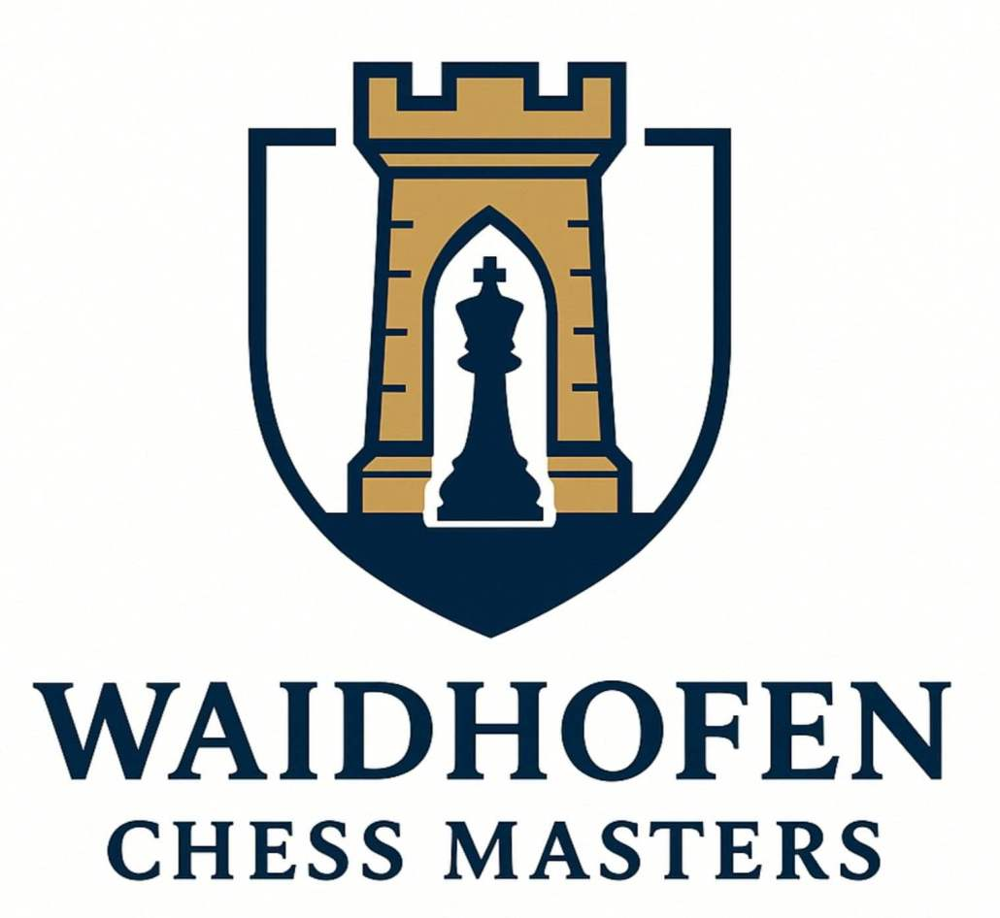
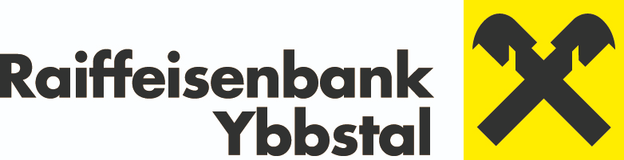
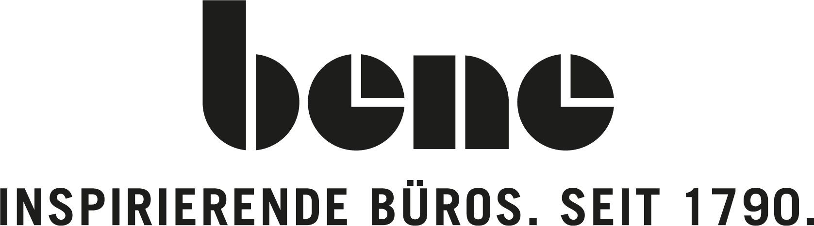
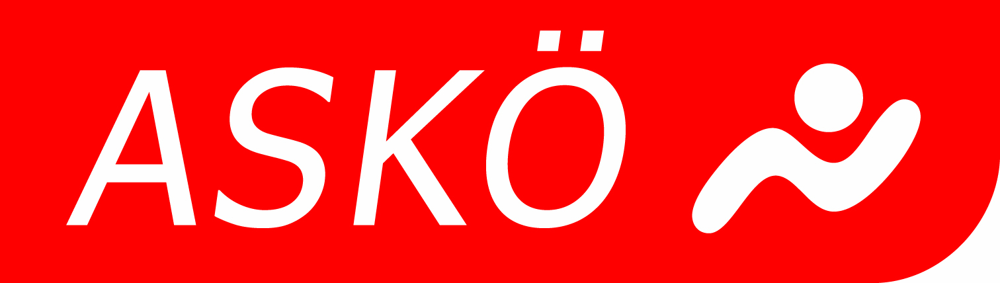
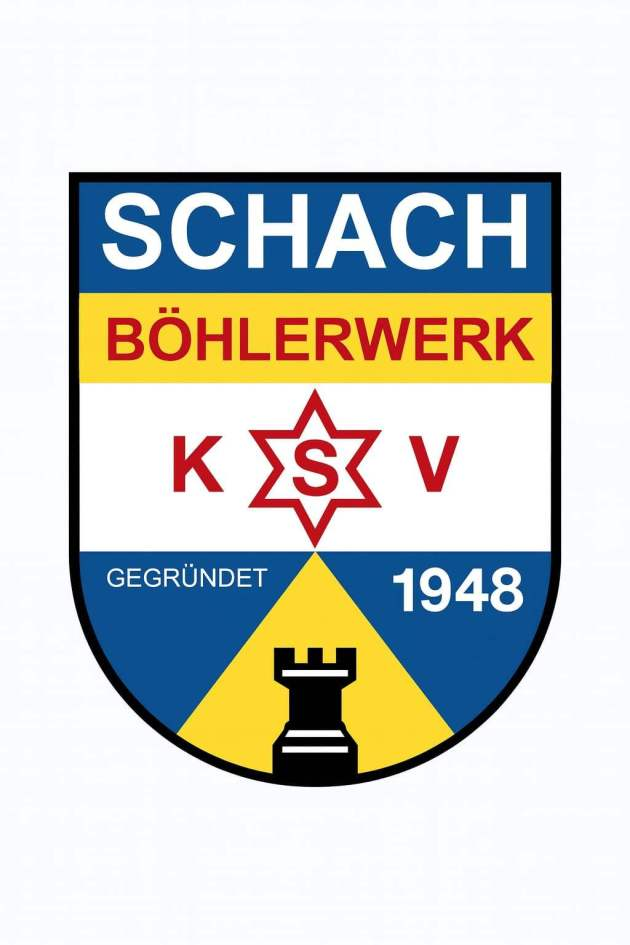

Verein für das königliche Schachspiel
SCHACHBURG Waidhofen/Ybbs
Wir leben Schach in Niederösterreich — von Turnierabenden im Verein bis zur internationalen Waidhofen Chess Masters Blitz Trophy.
Unser Verein
Tradition trifft Königsdisziplin
Die Schachburg Waidhofen/Ybbs ist ein Niederösterreichischer Schachverein mit einer einfachen Mission: Menschen jeden Alters für das königliche Schachspiel zu begeistern — vom ersten Bauernzug bis zum ranglistenrelevanten Blitz auf internationalem Niveau.
Bei uns trainieren engagierte Hobbyspielerinnen und -spieler ebenso wie ambitionierte Turnierspieler. Wir organisieren Vereinsabende, Trainings und sind Veranstalter der Waidhofen Chess Masters Blitz Trophy — einem FIDE‑gewerteten Blitzturnier im Herzen des Ybbstales.
Aktuelles Turnier entdecken →Hauptevent 2026
Waidhofen Chess Masters
1. Blitz Trophy
FIDE‑Blitz‑Turnier mit 11 Runden Schweizer System — international besetzt und Elo‑gewertet. Spielen Sie mit uns einen Tag voller schneller Königsangriffe.
- Ort Waidhofen an der Ybbs
- Modus 11 Runden Schweizer System
- Bedenkzeit FIDE Blitz — 3 min + 2 s / Zug
- Wertung Internationale Elo
- Turnierleitung IO Giorgio Gugler
- Schiedsrichter IA Kristof Kaweh
Partner & Sponsoren
Gemeinsam stärker
Unser herzlicher Dank gilt allen Partnern, die Schach in Waidhofen möglich machen.




Kontakt
Schreiben Sie uns
Fragen zur Vereinsmitgliedschaft, zum Training oder zum nächsten Turnier? Wir freuen uns über Ihre Nachricht.